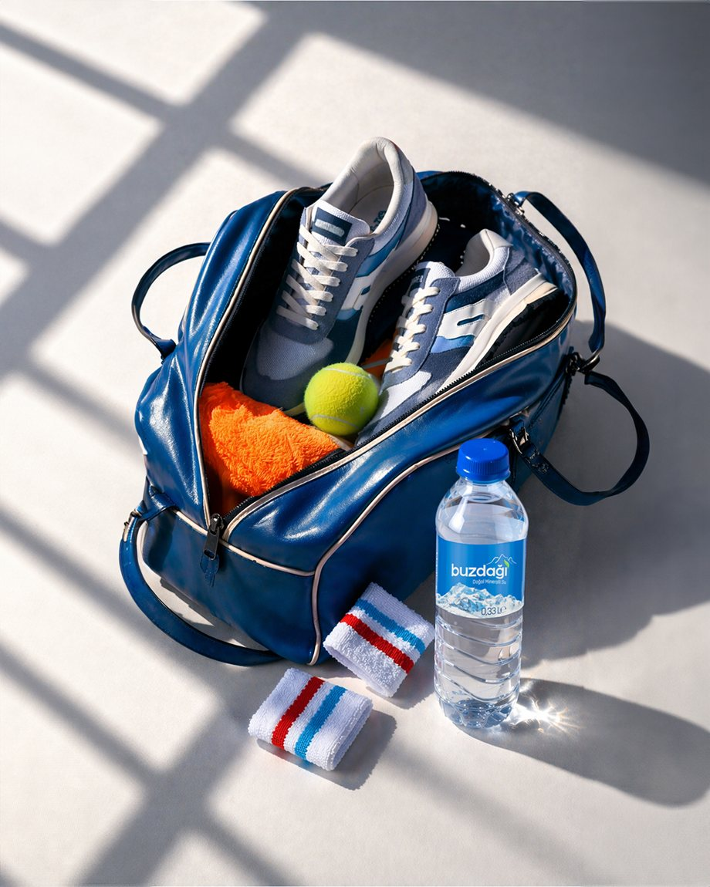
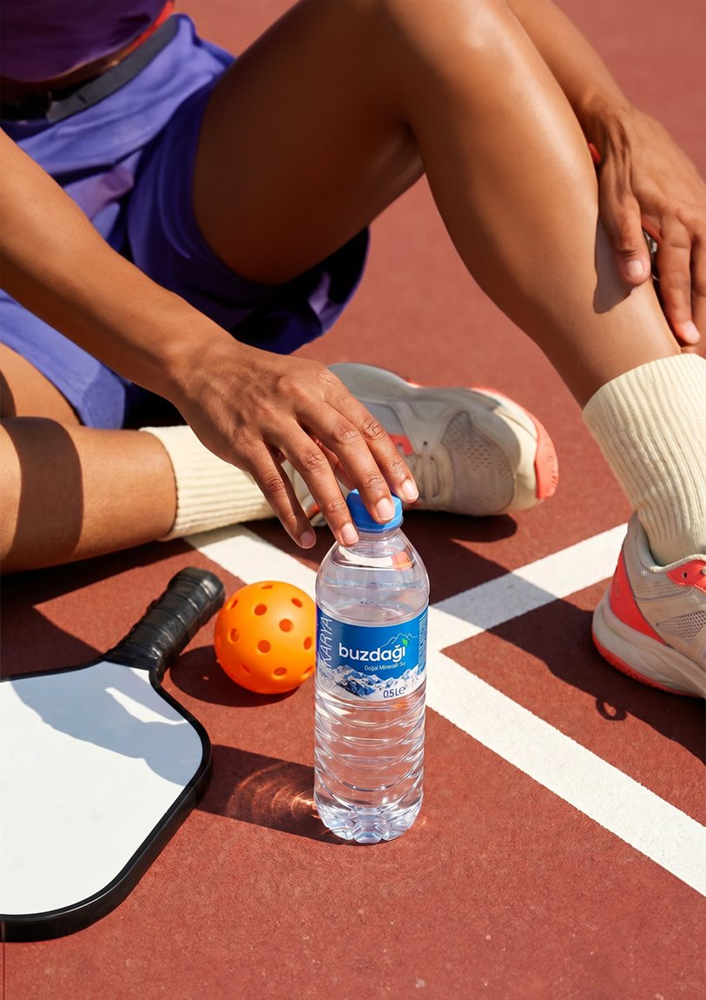
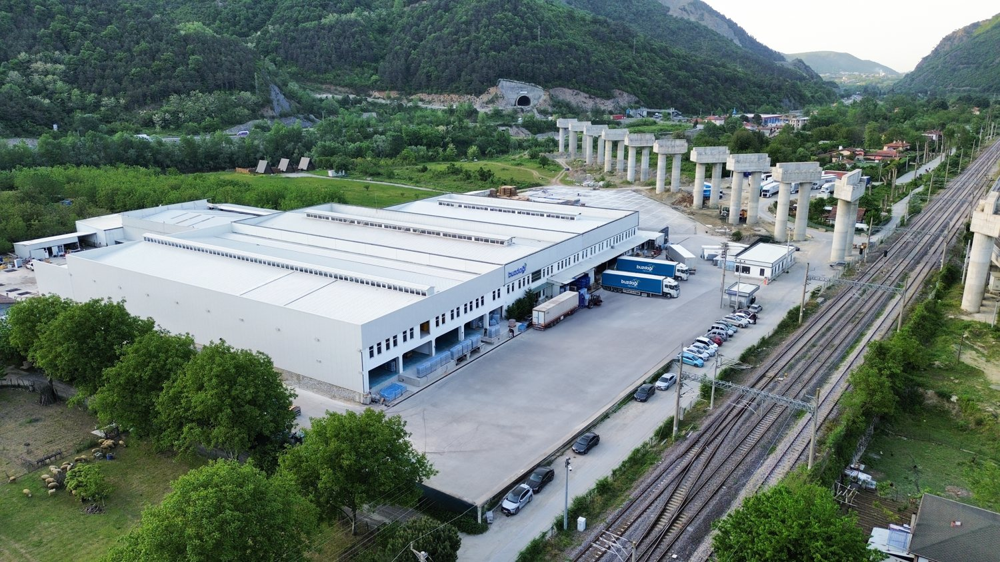
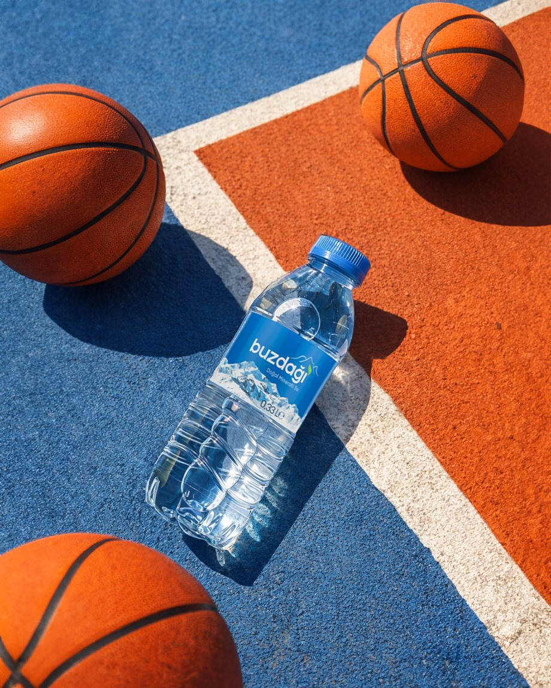

Her güne doğal bir dokunuş.
Buzdağı Doğal Mineralli Su ürünlerini farklı ihtiyaçlara uygun ambalaj seçenekleriyle sizlerle buluşturuyoruz.

Günlük yaşamdan sofralara, spordan aile boyu kullanıma kadar Buzdağı ürünleri tek bir katalogda.
Kataloğu İncele ↗İhtiyacınıza uygun
Buzdağı ürünleri
Ürünler için adet belirleyip sipariş listesi oluşturabilirsiniz. Fiyat ve stok bilgileri henüz sisteme tanımlanmamıştır.
* Ürün çeşitleri sunumda belirtilen Buzdağı portföyünden derlenmiştir. Satışa açıklık ve güncel stok MKM tarafından doğrulanmalıdır.

Hayatın her anında yanınızda.
İster yoğun bir iş gününde, ister spor sonrası, ister ailenizle aynı sofrada... MKM Group olarak Buzdağı Doğal Mineralli Su ürünlerini sizlere ulaştırmayı hedefliyoruz.
Ürünlere göz at ↗Güvenilir alışveriş,
doğru ürün.
MKM Sıvı İçecekleri Pazarlama Ticaret Anonim Şirketi, Sakarya'nın Arifiye ilçesinde faaliyet gösteren ve Buzdağı Doğal Mineralli Su ürünlerinin perakende satışını yapan bir şirkettir.
Amacımız, müşterilerimizin farklı ambalaj ve hacim ihtiyaçlarına uygun ürünleri kolayca inceleyebilmesini ve alışveriş için bizimle iletişime geçebilmesini sağlamaktır.
İletişime Geçin ↗
Sipariş listenizi
birlikte oluşturalım.
İhtiyacınız olan ürünleri sepete ekleyin ve sipariş özetinizi kolayca hazırlayın.
Bize ulaşın.
Ürünler ve siparişler hakkında bilgi almak için şirket adresimizi ve harita bağlantımızı kullanabilirsiniz.
MKM Sıvı İçecekleri Pazarlama Ticaret Anonim Şirketi
Hanlı Merkez, Hanlı 1. Sokak No:78/4
Arifiye / Sakarya
Şirket iletişim bilgileri henüz paylaşılmadığı için bu alanlar yayına hazır hale getirildiğinde eklenecektir.
